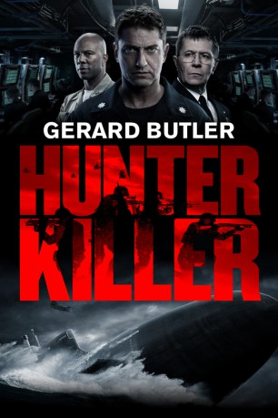
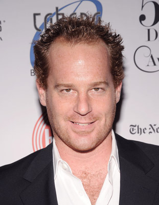
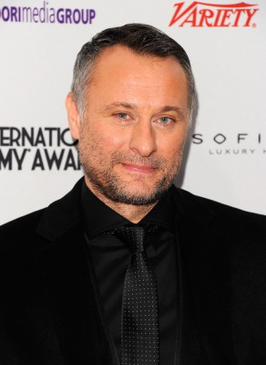
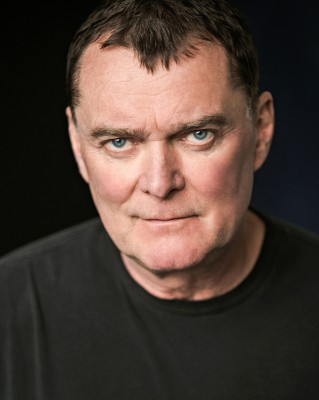
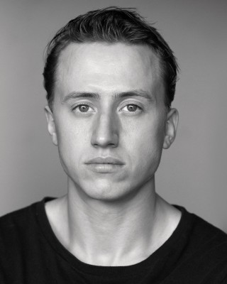
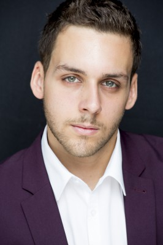

#10850 Hunter Killer
 gesehen am 10.03.2019
gesehen am 10.03.2019
 
 IMDB-Wertung: 6.6 / 10
IMDB-Wertung: 6.6 / 10  Tomatometer: 36
Tomatometer: 36  Metascore: 43
Metascore: 43 
Ein U-Boot-Kapitän schließt sich mit einem Navy-SEAL-Team zusammen, um den russischen Präsidenten zu retten, der während eines Militärcoups gefangen genommen wurde, als er versuchte, einen durchgedrehten russischen General davon abzuhalten, den Dritten Weltkrieg zu entfachen. Neben der Befreiung des Präsidenten müssen die Helden die kriegerischen Pläne des Bösewichts vereiteln.
Jahr: 2018
Dauer: 122 Minuten
FSK: 16
Land: England Studio: Concorde FilmverleihTonspuren: DTS - ,
Untertitel: Deutsch, Englisch,
Auflösung: 1080p (1920x808) Größe: 6563 MB
Genre: Action, Thriller
Regisseur: Donovan Marsh
Drehbuch: Arne Schmidt, Jamie Moss, George Wallace, Don Keith
Soundtrack: Trevor Morris
Darsteller:
- Jacob Scipio als Sonar 2
 Corey Johnson als Captain
Corey Johnson als Captain-  Adam James als Captain Forbes
 Common als RA John Fisk
Common als RA John Fisk Henry Goodman als Senator from Illinois
Henry Goodman als Senator from Illinois Colin Stinton als Senator from Iowa
Colin Stinton als Senator from Iowa Gary Oldman als CJCS Charles Donnegan
Gary Oldman als CJCS Charles Donnegan Gerard Butler als Captain Joe Glass
Gerard Butler als Captain Joe Glass- Carter MacIntyre als XO Brian Edwards
- Shane Taylor als TMC Turner
- Mikey Collins als Brickowski
- Will Attenborough als Kaplan
- Kieron Bimpson als Nichols
 David Gyasi als Cob Wallach
David Gyasi als Cob Wallach Michael Jibson als Reed
Michael Jibson als Reed- Christopher Goh als Park
- Brian Kinney als Officer on the Deck
- Sarah Middleton als Liddy
- Taylor John Smith als Belford
- Gabriel Chavarria als Jimenez
- Cosmo Jarvis als Fathometer Operator
 Linda Cardellini als Jayne Norquist
Linda Cardellini als Jayne Norquist Toby Stephens als Bill Beaman
Toby Stephens als Bill Beaman Michael Trucco als Devin Hall
Michael Trucco als Devin Hall- Ryan McPartlin als Matt Johnstone
- Zane Holtz als Paul Martinelli
- Alexander Diachenko als President Zakarin
 Yuri Kolokolnikov als Oleg
Yuri Kolokolnikov als Oleg- Michael Gor als Admiral Dmitriy Durov
 Igor Jijikine als Tretiak
Igor Jijikine als Tretiak Ilia Volok als Captain Vlade Sutrev
Ilia Volok als Captain Vlade Sutrev-  Michael Nyqvist als Captain Andropov
 Caroline Goodall als President Dover
Caroline Goodall als President Dover David Yelland als SECDEF
David Yelland als SECDEF-  Stuart Milligan als Secretary of State
-  Theo Barklem-Biggs als Seaman Mackinnon (uncredited)
 Ross Carter als Pentagon Staff (uncredited)
Ross Carter als Pentagon Staff (uncredited)- Nathan Cooper als Mess Crew (uncredited)
- Bradley Crees als McKittrick (uncredited)
- Charlotte Dunnico als Girl (uncredited)
 Dino Fazzani als Andropov Guard (uncredited)
Dino Fazzani als Andropov Guard (uncredited)- Michael Hoad als Submarine Guard (uncredited)
 Marian Lorencik als LCDR Naval Officer Pentagon (uncredited)
Marian Lorencik als LCDR Naval Officer Pentagon (uncredited)- Jason Matthewson als Budd (uncredited)
- Elizabeth McCafferty als Martinelli's Girlfriend (uncredited)
- Halima Nagori als Senator in White House (uncredited)
-  Bernardo Santos als Andropov Guard Gomez (uncredited)
 Atanas Srebrev als Russian Lt. Commander (uncredited)
Atanas Srebrev als Russian Lt. Commander (uncredited)- Debra Tammer als Colonel Lieutenant (uncredited)
 Stuart Whelan als Pentagon Staff (uncredited)
Stuart Whelan als Pentagon Staff (uncredited)
Datei: X:\2018(G-M)\Hunter Killer (2018, FSK16, 1920x808).mkv seit 10.03.2019
Festplatte: HD 2018(G-Z)-2019(A-Z)
 Es gibt insgesamt 138 Filme in der Gruppe '2018(G-M)'
Es gibt insgesamt 138 Filme in der Gruppe '2018(G-M)'